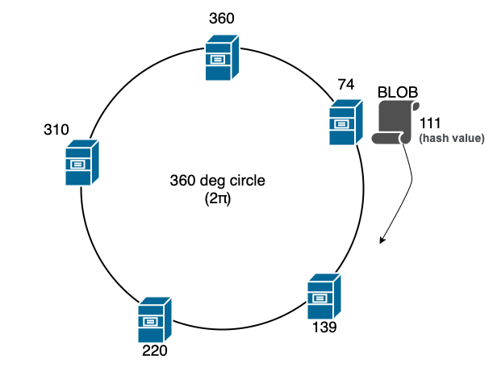

Consistent hashing, explained with a small example
With hash-mod-N, adding one server moves almost every key. Consistent hashing moves only 1/N of them. Worked through with four servers, six keys, and the two refinements every implementation adds.
Originally written on 22 May 2023. Migrated from a WordPress blog and reformatted.
The problem with modulo
The obvious way to spread keys across N servers is server = hash(key) % N. It is even, fast, and stateless. Its defect appears the first time N changes.
With 4 servers, key user:1001 hashes to, say, 7,213, and 7213 % 4 = 1: server 1. Add a fifth server and 7213 % 5 = 3: server 3. The key has moved, and so has almost every other key, because changing the modulus changes the result for all but a fraction 1/N of inputs. In a cache, that means a near-total miss storm on every scale event. In a partitioned store, it means rehoming most of the data.
The ring
Consistent hashing hashes both keys and servers into the same space, conventionally visualised as a ring from 0 to 2^32 - 1. Each key is assigned to the first server found moving clockwise from the key's position.

Figure by WikiLinuz, Wikimedia Commons, CC BY-SA 4.0.
{kind=link}
Adding a server places one new point on the ring. The only keys that move are those between the new server and its counter-clockwise neighbour, which were previously served by the next server clockwise. Every other key is untouched. Removing a server has the symmetric effect: its keys move to the next server clockwise, and nothing else changes.
On average, adding or removing one server out of N moves 1/N of the keys, which is the theoretical minimum.
A worked example
Ring size 100 for readability. Servers hash to A=10, B=35, C=60, D=85.
| Key | hash | Served by |
|---|---|---|
| k1 | 4 | A (10) |
| k2 | 22 | B (35) |
| k3 | 40 | C (60) |
| k4 | 58 | C (60) |
| k5 | 71 | D (85) |
| k6 | 93 | A (10), wrapping around |
Add server E at 50. Only keys in (35, 50] move: k3 (40) moves from C to E. k4 (58) stays on C. Everything else is unchanged. One key out of six.
Remove server B. Keys in (10, 35] move to the next server clockwise: k2 moves to C (or E, if E was added). Again one key.
Virtual nodes
With a handful of servers, the arcs between them are uneven. In the example, A owns (85, 10], a span of 25, while B owns (10, 35], also 25, but with random hashes the spans could easily be 5 and 45. One server would take nine times the load of another.
The fix is to place each physical server at many points on the ring, say 100 to 200 virtual nodes each, with hash(server + "#" + i). The arcs then average out, and a removed server's load is spread across all remaining servers rather than dumped on one neighbour. Every production implementation does this.
Bounded load
Even with virtual nodes, a single hot key still lands on one server. Consistent hashing with bounded loads adds a rule: if the target server is above a load threshold (for example 1.25 times the average), move clockwise to the next one. Keys are still sticky under normal conditions and spill over only under skew. This is what Google's load balancers and several CDNs use.
Implementation sketch
import bisect, hashlib
class Ring:
def __init__(self, nodes, replicas=150):
self._keys, self._map = [], {}
for n in nodes:
for i in range(replicas):
h = self._hash(f"{n}#{i}")
bisect.insort(self._keys, h)
self._map[h] = n
def _hash(self, s):
return int(hashlib.md5(s.encode()).hexdigest(), 16) % (2**32)
def node_for(self, key):
h = self._hash(key)
i = bisect.bisect(self._keys, h)
return self._map[self._keys[i % len(self._keys)]]A sorted list of virtual node positions and a binary search per lookup. Adding or removing a physical node inserts or removes its replicas positions.
Where it is used
Distributed caches (memcached clients, Redis Cluster's slot mapping is a close relative), partitioned databases (Cassandra, DynamoDB), load balancers with session affinity, and CDNs. Anywhere keys need a stable home that survives the set of homes changing.